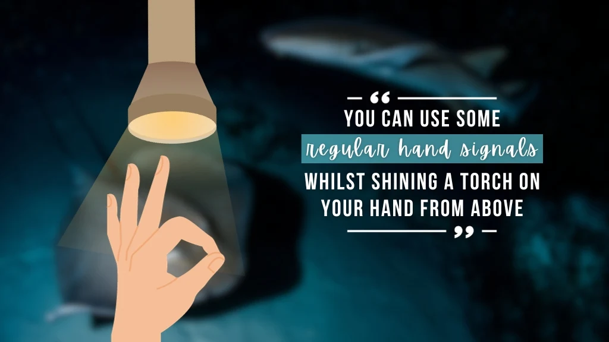
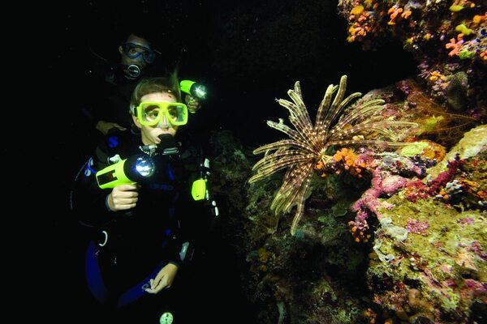
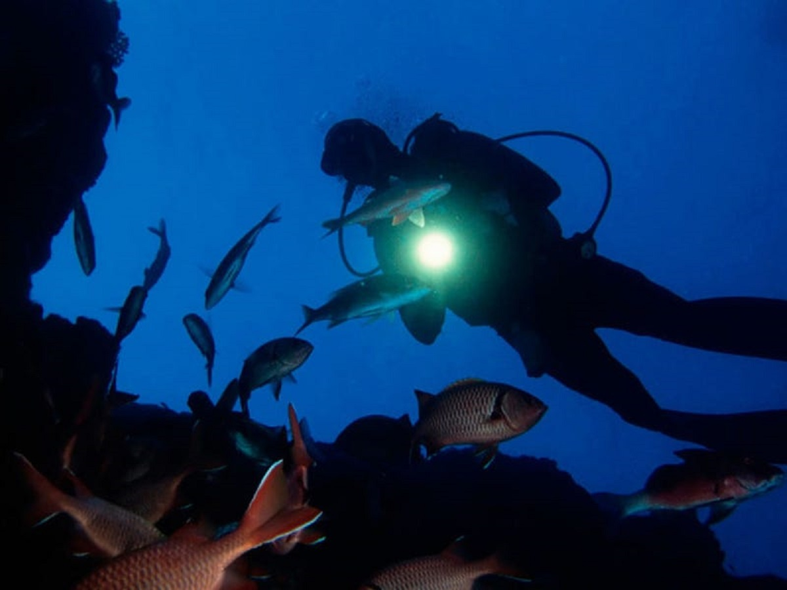
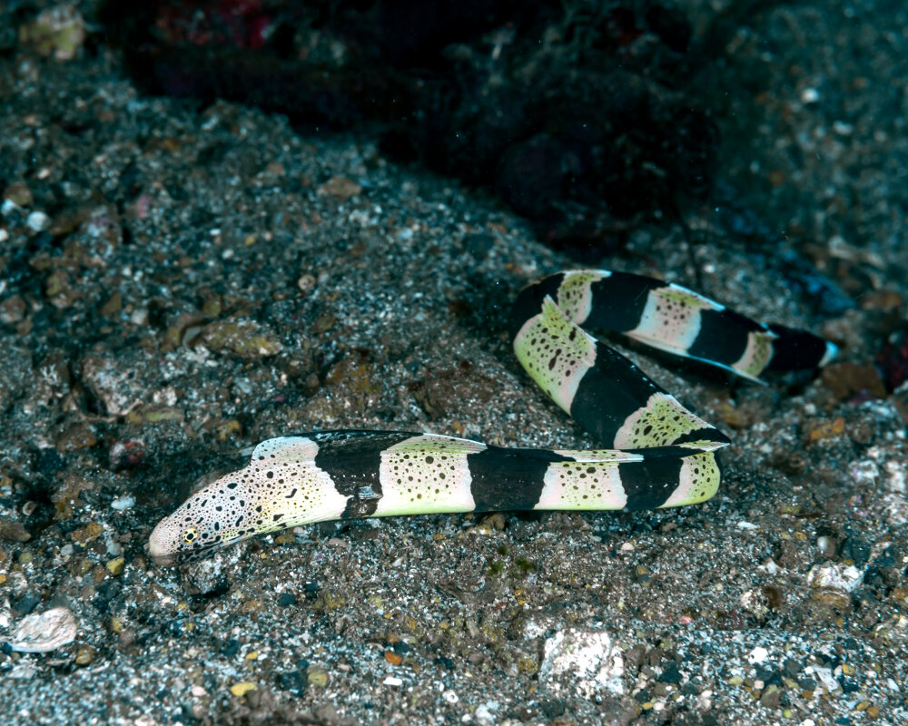

Wat is nachtduiken?
Bij het nachtduiken ziet men het onderwaterleven in een andere verschijningsvorm. Sommige vissen die men overdag niet ziet laten zich zien,
ongewervelden die overdag in het zand leven komen daar 's nachts uit, van veel koralen staan 's nachts de poliepen uit.
Kreeftachtigen gaan er veelal 's nachts op uit om te jagen.
Nachtduiken vereist een andere configuratie van de apparatuur dan overdag.
Waar men overdag misschien één lamp meeneemt, is men er 's nachts afhankelijk van en moet men er twee meenemen voor het geval de eerste het begeeft.
In plaats van handsignalen die men overdag gebruikt, communiceert men 's nachts door middel van signalen met de lamp.
Of door de handsignalen in het licht te geven.



Mijn ervaring met nachtduiken
Om mijn brevet 'advanced open water', vervolg op 'open water' waardoor je dieper mag duiken, te halen moest ik nachtduiken.
Ik vond het erg uniek. Het voelde heel anders om in het donker te duiken, en om anders te communiceren.
Het was heel koud, het water was namelijk 8 graden. Hetgene wat erg moeilijk is aan nachtduiken, is dat je niks ziet.
je moet heel goed opletten, zodat er geen ongelukken gebeuren.
Waarom duiken in de nacht?
Nachtduiken is bijzonder omdat je de onderwaterwereld op een totaal andere manier ervaart dan overdag. In het donker komen veel dieren tevoorschijn die je overdag zelden ziet, zoals kreeften, octopussen en jagende vissen. Met je duiklamp focus je je aandacht op details, kleuren en bewegingen die bij daglicht minder opvallen. Alles voelt rustiger en mysterieuzer, wat zorgt voor een intense en bijna magische beleving. Daarnaast is het vaak stiller onder water en zijn er minder duikers, waardoor je je meer verbonden voelt met de omgeving. Nachtduiken biedt zo een unieke, avontuurlijke ervaring. Een dier die vaak te zien is tijdens nachtduiken is een murene.
